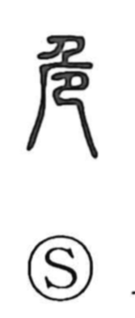

危

Uncategorized
Kun: abunai, ayaui, ayabumu | On: ki
danger ・ peril ・ precarious
Explanation
Shirakawa sees 危 as a picto-phonetic graph. The ancient form depicts a sheer cliff, with a person—drawn using the upper part of 尸—kneeling and peering over the edge; in other renderings a kneeling figure (shaped like 巳) appears beneath the overhang. This image of a body poised at a precipice naturally yields the sense of peril and, by association, height. Its on reading ki reflects the character’s phonetic side.